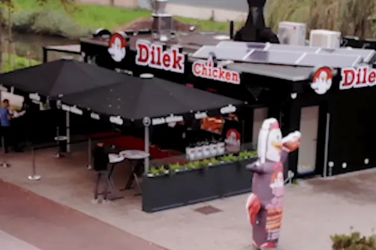
Osdorp
1069 BC Amsterdam
- Maandag t/m zondag
- 10:30 – 20:00
Contact · locaties & openingstijden
Drie vestigingen, elke dag open. Vragen of speciale wensen? Bel de vestiging of mail ons.
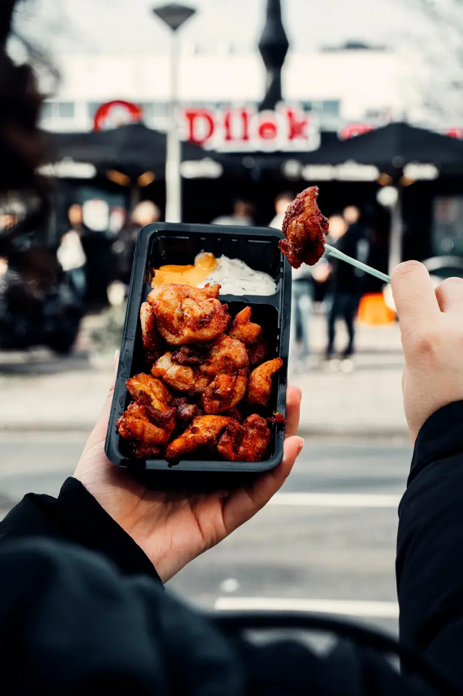
Onze drie vestigingen

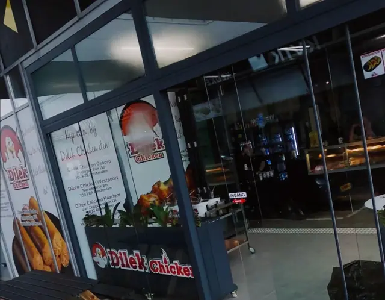
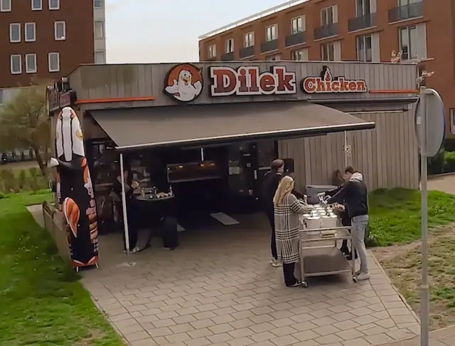
Volg ons
Fotogalerij
Een kijkje achter de toonbank. Kom langs en ervaar het zelf.
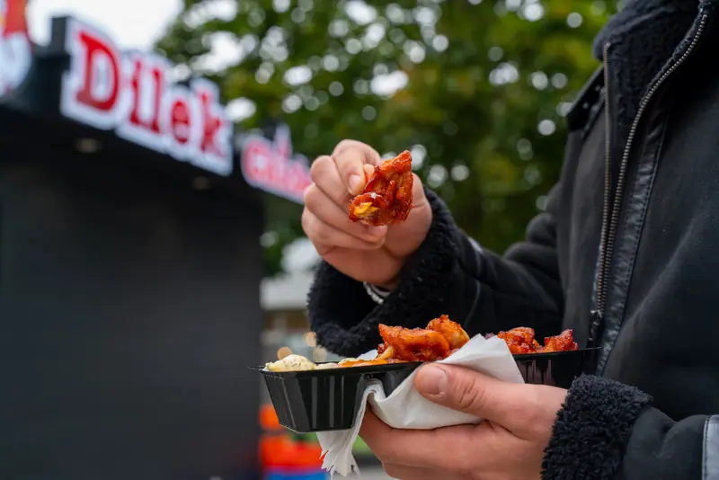
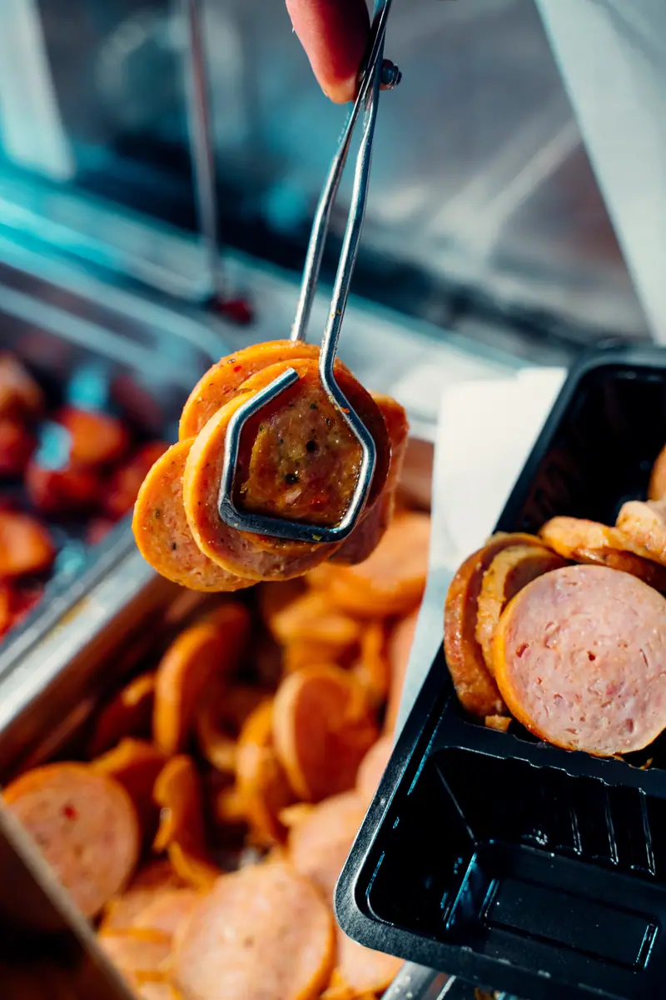
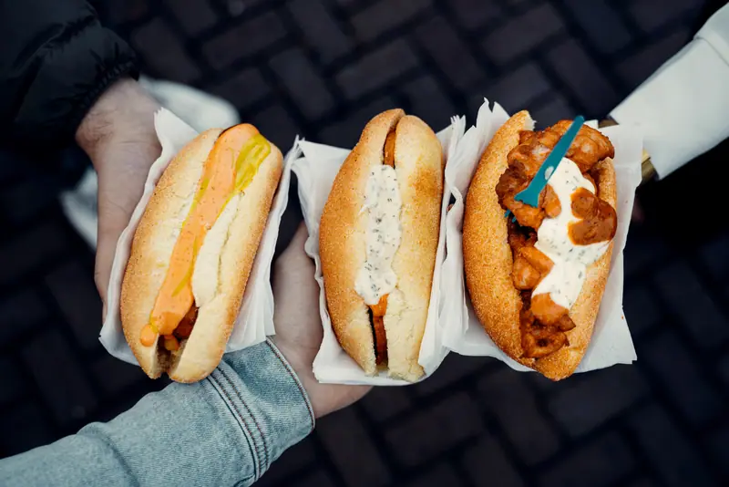
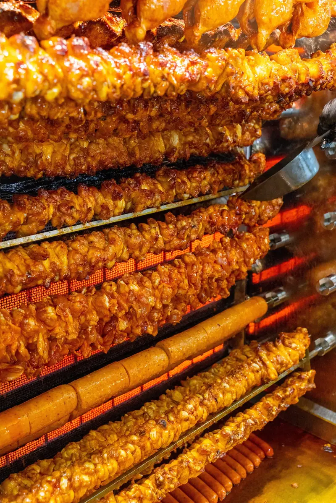
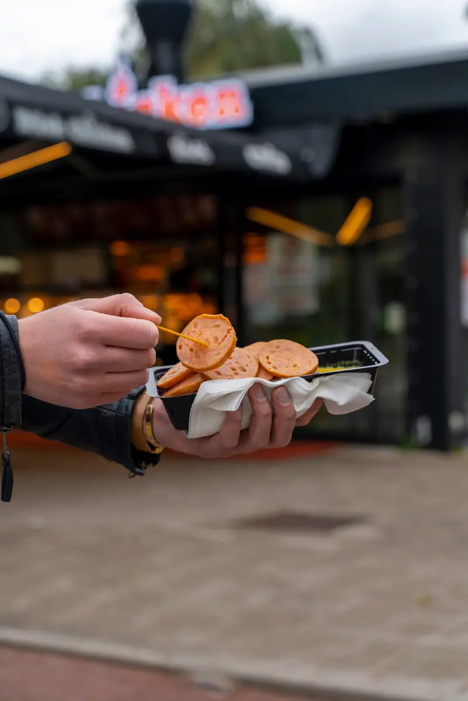
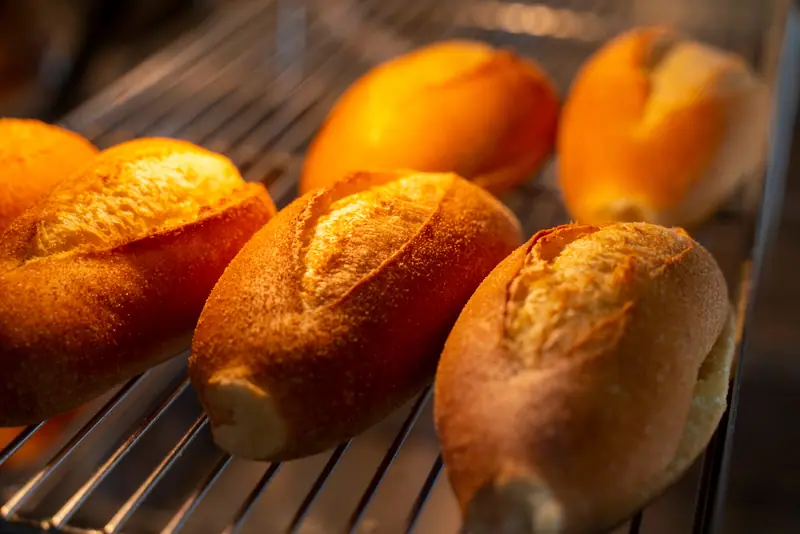
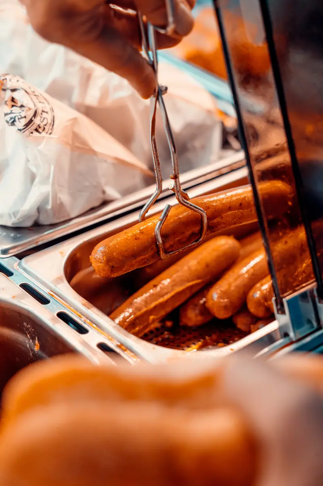
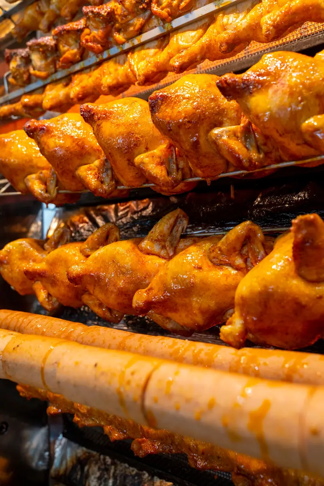
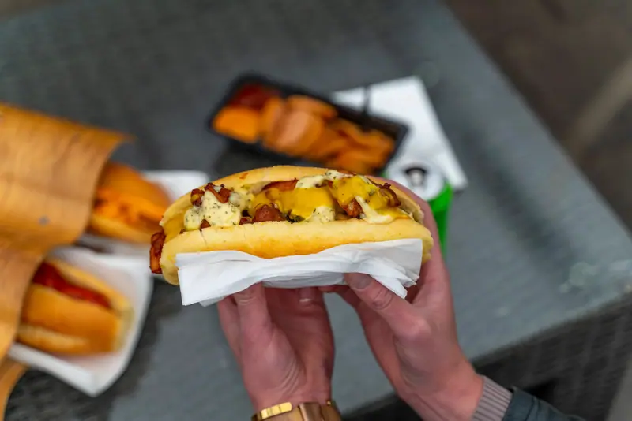